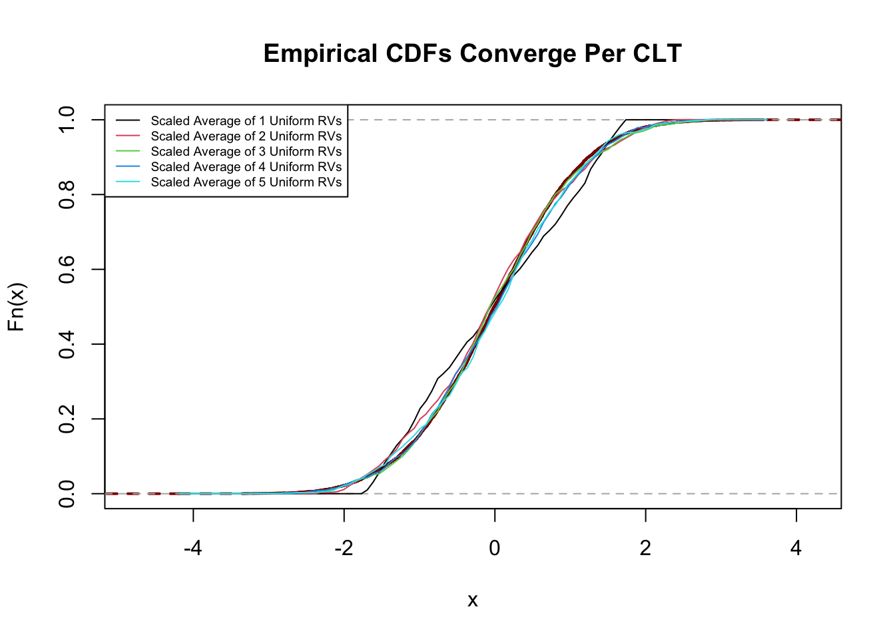

ppois(40, lambda=30) - ppois(20, lambda=30)[1] 0.9324058\[\newcommand{\P}{\mathbb{P}} \newcommand{\E}{\mathbb{E}} \newcommand{\V}{\mathbb{V}} \newcommand{\M}{\mathbb{M}} \]
In this set of notes, we consider the behavior of averages of large numbers of random variables. As we have seen in previous notes, tools like Markov’s Inequality, Chebyshev’s Inequality, and Chernoff bounds guarantee us that sample averages converge to the expectation. Recall that the Law(s) of Large Numbers tell us this happens asymptotically while the inequalities tell us quantitatively what will happen.
While these results are powerful, we have seen that they are sometimes quite loose: for example, as we saw in Test 2, applying Chebyshev’s Inequality to a sample mean gave bounds that were about 80x too loose. Revising that analysis with Chernoff bounds yields a tighter bound, but today we take a different approach.
Given \(X_1, \dots, X_n\) IID random variables, what can we say about the distribution of
\[\overline{X}_n = \frac{1}{n} \sum_{i=1}^n X_i\]
Probability inequalities gave us results of the flavor “No matter the distribution of \(\overline{X}_n\), it is outside a given interval with some probability.” Here, the looseness (imprecision) of our analysis comes from the fact that we use tools based on “worst-case” bounds, while the distribution of \(\overline{X}_n\) is far from pathelogical.
The limit behaviors we consider today attempt to answer this question differently. They say “\(\overline{X}_n\) has approximately some distribution and variables with that distribution fall outside a given interval with some probability.” If the distribution is nicely behaved (and it is!), the imprecision here comes from the fact we use an approximate distribution as input to a precise calculation. In general, because this type of analysis is based on a distribution, the results obtained are more precise, but not always guaranteed to be valid.
Which approach is better: “worst-case” analysis or “approximate” analysis? Neither is strictly better - in sensitive settings, e.g., we might prefer a worst case approach, while in a resource-constrained (expensive data) setting, we might prefer the more precise, if approximate, results of today’s approach.
We state the “big result” of today up front and then develop the tools to fully understand, apply, and prove it:
Suppose that \(X_1, \dots, X_n, \dots\) are IID random variables each with mean \(\mu\) and variance \(\sigma^2\). Then the standardized sample average times \[\overline{X}_n = \frac{1}{n} \sum_{i=1}^n X_i\] converges in distribution to a standard normal random variable after scaling by \(\sqrt{n}\); that is, \[\sqrt{n}\left(\frac{\overline{X}_n - \mu}{\sigma}\right) \buildrel d \over \to \mathcal{N}(0, 1).\]
Informally, this is often written
\[\overline{X}_n \buildrel d \over \to \mathcal{N}\left(\mu, \frac{\sigma^2}{n}\right)\]
but strictly speaking this is not a valid limit since the term on the right is not constant.
To unpack this statement, we need to to introduce several new concepts, first of which is convergence in distribution. Last week, we discussed convergence in probability, which stated that two random variables were (nearly) equal with high probability.1
Suppose we have \(X_i \sim \text{Binom}(5, 0.5)\). Where does the normal distribution come from? Do we make up a normal distribution? If so, is it correlated with the \(X_i\)? Do we even know how to do a correlated binomial-normal pair?
Perhaps more abstractly, for any \(n\), \(\overline{X}_n\) is still a discrete distribution. (In fact, it’s basically just a scaled binomial.) So how does it “become” a normal distribution? When does the PMF transmogrify into a PDF? We could answer this precisely - that’s what calculus is for! - but here we take a more pragmatic approach.
We define convergence in distribution as follows: a sequence of random variables \(Y_1, Y_2, Y_3, \dots\) converges in distribution to a random variable \(Y_*\), denoted \(Y_n \buildrel d \over \to Y_*\) if \[\lim_{n\to\infty} \E[f(Y_n)] \to \E[f(Y_*)]\] for all reasonable functions \(f\).
This gives us a practical definition: if we get the same answer for all questions (i.e., same expectation for all reasonable functions \(f\)), then \(Y_n\) is functionally interchangeable with \(Y_*\).
This is the sense in which the CLT works and in which it is applied. We don’t know (and don’t care) if \(\overline{X}_n\) is really normally distributed; if we do any expectation using the true distribution of \(\overline{X}_n\) vs a normal distribution, we get the same answer. If it walks like a duck, and quacks like a duck…
We’re not going to define “reasonable” functions in this class, but it definitely includes:
so as long as your \(f\) isn’t too crazy, it probably works.
Let’s see how this works in practice:
Example Let \(X_1, \dots, X_n, \dots\) be IID Poisson random variables with mean \(\lambda = 3\). What is the probability that \(\overline{X}_{10}\) is in the range \([2, 4]\).
If we do the calculation exactly, we recall that independent Poisson variates add, so \(\sum_{i=1}^{10} X_i \sim \text{Poisson}(30)\). Then \[\P(2 \leq \overline{X}_{10} \leq 4) = \P(20 \leq \text{Poisson}(30) \leq 40) = F_{\text{Poisson}(30)}(40) - F_{\text{Poisson}(30)}(20)\] We can’t compute this exactly since the Poisson CDF has no elementary closed-form expression, but R helps us out:
How does this work if we use the CLT instead? Well, each Poisson has mean 3 and variance 3 (recall the Poisson mean and variance are equal), so the distribution of \[\overline{X}_n \buildrel d \over \to \mathcal{N}(3, \frac{3}{n}) \implies \overline{X}_{10} \buildrel d \over \approx \mathcal{N}(3, (\sqrt{0.3})^2)\] If we do the normal distribution calculation instead, we see:
\[\P(2 \leq \overline{X}_{10} \leq 4) = \Phi\left(\frac{4 - 3}{\sqrt{0.3}}\right) - \Phi\left(\frac{2 - 3}{\sqrt{0.3}}\right)\]
Again, we have to turn to R to do the numerics for us:
So it’s not exactly right, but it’s pretty darn close. And as we look at larger and larger samples, the approximation gets better and better.
Does this actually help us? Well, we got pretty lucky here because Poisson random variables “add” nicely, so we could still do the math exactly. For other random variables, we aren’t so lucky:
Let \(U_1, \dots\) be IID Uniform(\([0, 1]\)) random variables. What is the probability that \(\overline{U}_{20} > 0.9\)?
If we try to approach this analytically, we can use the expression for the sum of two random variables:
\[ f_{X + Y}(z) = \int f_{X}(w) f_{Y}(z-w) \,\text{d}w\] Extending this to \(\overline{U}_{20}\) would require doing 20 integrals (or perhaps one very complicated 20-dimensional integral) - a non-starter.
But with the CLT, we can knock this out in a breeze. For each \(U_i\), \(\E[U_i] = 1/2\) and \(\V[U_i] = 1/12\), so
\[\overline{U}_{20} \buildrel d \over \approx \mathcal{N}\left(\frac{1}{2}, \frac{1/12}{20}\right) = \mathcal{N}\left(\frac{1}{2}, \frac{1}{240}\right) \]
Hence,
\[\P(\overline{U}_{20} \geq 0.9) = 1 - \Phi(\frac{0.9 - 0.5}{\sqrt{1/240}})\] with
So it’s basically impossible.
It is interesting to see how the CDF of averages of uniform distributions behaves:
layout(matrix(1:9, nrow=3))
for(i in 1:9){
X <- matrix(runif(1e7*i), ncol=i)
X <- rowSums(X)
hist(X, main=paste("Sum of", i, "Uniform RVs"), breaks=100)
}As we add more RVs together, we get something that looks ever more like the normal distribution. If we standardize the sums and plot the standard normal CDF, the results are even clearer:
layout(matrix(1:9, nrow=3))
for(i in 1:9){
X <- matrix(runif(1e7*i), ncol=i)
X <- rowMeans(X)
X_std <- (X - 0.5) / sqrt(1/12) * sqrt(i)
hist(X_std, main=paste("Sum of", i, "Uniform RVs"),
breaks=100, freq=FALSE)
xx <- seq(-5, 5, length.out=200)
lines(xx, dnorm(xx), col="red4")
}While there is a bit of daylight between the (empirical) PDF of 2 or 3 uniform RVs and the standard normal PDF, the curve is basically a perfect fit by the time we get to 9 RVs.
We can also see this with the empirical CDFs:
Z <- rnorm(1e4)
plot(ecdf(Z), main="Empirical CDFs Converge Per CLT",
lwd=2, col="red4", lty=2)
for(i in 1:5){
X <- matrix(runif(1e3*i), ncol=i)
X <- rowMeans(X)
X_std <- (X - 0.5) / sqrt(1/12) * sqrt(i)
F_Xstd <- ecdf(X_std)
zz <- seq(min(Z), max(Z), length.out=101)
lines(zz, F_Xstd(zz), col=i)
}
legend("topleft",
col=1:5, lty=1, lwd=1,
legend=paste("Scaled Average of", 1:5, "Uniform RVs"),
cex=0.6)
In this case, use of the CLT let us avoid nasty calculations and get a substantially correct answer. In fact, as the CDF plot shows, we’d get essentially the right answer for any probability interval question. (In the Bad Old Days, the CLT was also useful because mathematicians had tables of manually-computed values for the normal CDF but no other distributions; this is less important in the modern era.)
So why would the CLT be true? Before proving it formally, let’s recall that the normal distribution has a stability property. If \(X, Y\) are independent normal RVs, \(aX + bY\) has a normal distribution as well for any scalars \(a, b\). Before we used this property to argue that the sum of normals must be normal, but we can use this as a hand-waving argument that averaging has to converge (in distribution) to a normal RV.
Suppose this weren’t the case and consider \(Z_1, \dots, Z_n\) independent standard normal random variables. By stability, \(\sum Z_i \sim \mathcal{N}(0, n)\) so \(\overline{Z}_n \sim \mathcal{N}(0, 1)\). If the CLT applies and \(\overline{Z}_n \buildrel d \over \to Z_*\), for some other random variable \(Z_*\), then we have to have that \(Z_*\) is a standard normal because \(\overline{Z}_n\) is standard normal for all \(n\). Of course, this argument assumes that, no matter what we average, we have to get the same distribution. This is not obvious and in fact it is the heart of the CLT: not just that some distributions “normalize” as we take larger averages, but all distributions “normalize” in the exact same way!
How could we prove such a thing? There’s an easy proof that depends only on a bit of calculus and a harder proof that gives more intuition. We’ll do the easy proof and then talk through the high points of the hard proof.
Let \(X_i\) be IID random variables, each with finite mean \(\mu\), finite variance \(\sigma^2\), and MGF \(\M_{X_i}(t)\). That means that \[\M_{X_i}(t) = 1 + \mu t + \frac{(\mu + \sigma^2)}{2}t^2 + \mathcal{O}(t^3)\] where \(\mathcal{O}(t^3)\) means a small term proportional to \(t^3\). (This follows from Taylor’s theorem for the remainder of a power series.) What does this tell us about \[\M_{\overline{X}_n}(t) = \M_{(X_1 + X_2 + \dots + X_n)/n}(t)?\] We recall two facts about the MGF: first, \(\M_{X+Y}(t)=\M_X(t)\M_Y(t)\); secondly, \(\M_{aX}(t) = \E[e^{t(aX)}] = \E[e^{(ta)X}] = \M_{X}(at)\). Putting these together, we have:
\[\begin{align*} \M_{\overline{X}_n}(t) &= \M_{\sqrt{n}*(X_1 + X_2 + \dots + X_n)/n}(t) \\ &= \M_{X_1/\sqrt{n} + X_2/\sqrt{n} + \dots + X_n/\sqrt{n}}(t)\\ &= \M_{X_1/\sqrt{n}}(t) \M_{X_2/\sqrt{n}}(t) \dots \M_{X_n/\sqrt{n}}(t)\\ &= \M_{X_1}(t/\sqrt{n}) \M_{X_2}(t/ v) \dots \M_{X_n}(t/\sqrt{n})\\ &= \M_{X_1}(t/\sqrt{n})^n \\ &= \left(1+ \mu \frac{t}{\sqrt{n}} + \frac{\mu + \sigma^2}{2}\frac{t^2}{\sqrt{n}^2}\right)^n \\ &= \left(1+ \mu \frac{t}{\sqrt{n}} + \frac{\mu + \sigma^2}{2}\frac{t^2}{n}\right)^n \end{align*}\]
Here, we have to recognize this as the exponential limit (\(\lim x_{\to\infty} (1 + t/x)^x = e^t\)) to find
\[\M_{\overline{X}_n}(t) \to M_Z(t)\]
Hence, \(\sqrt{n}(\overline{X}_n - \mu)/\sigma \buildrel d \over \to \mathcal{N}(0, 1)\) as desired.
Extensions:
We mostly considered convergence in probability to a degenerate random variable, i.e. a constant, so this really only meant that the “random” one was concentrated around the “constant” one.↩︎